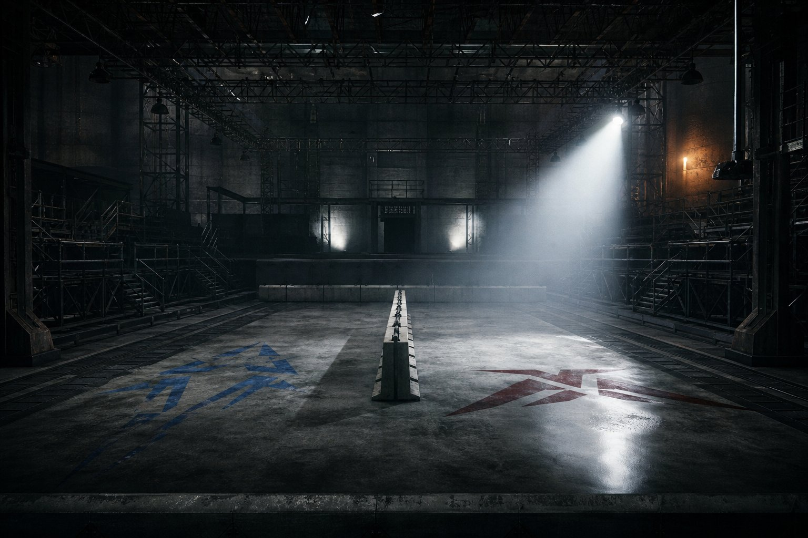
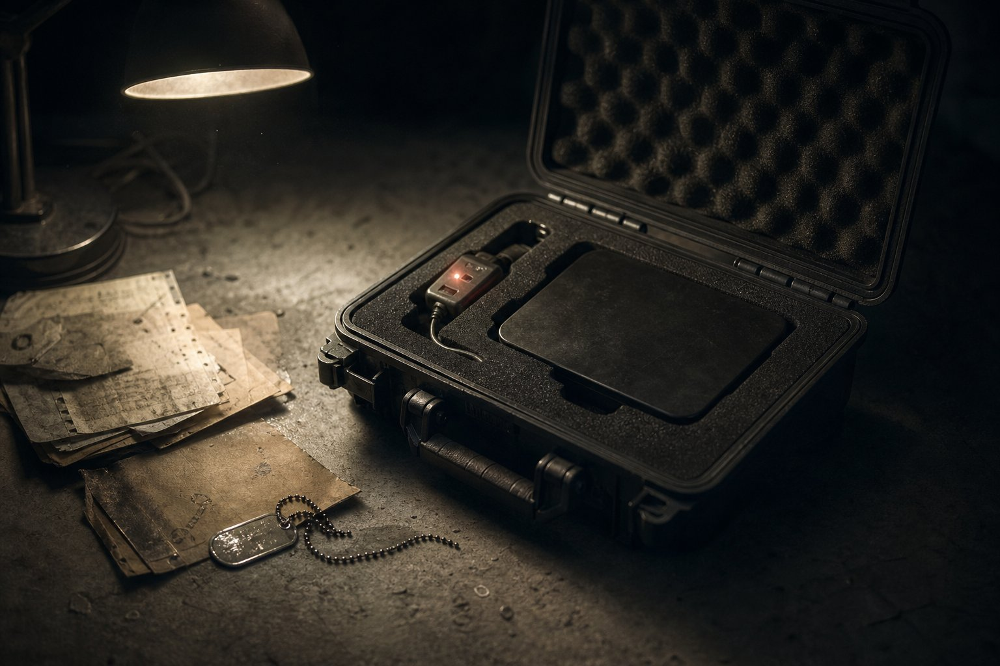
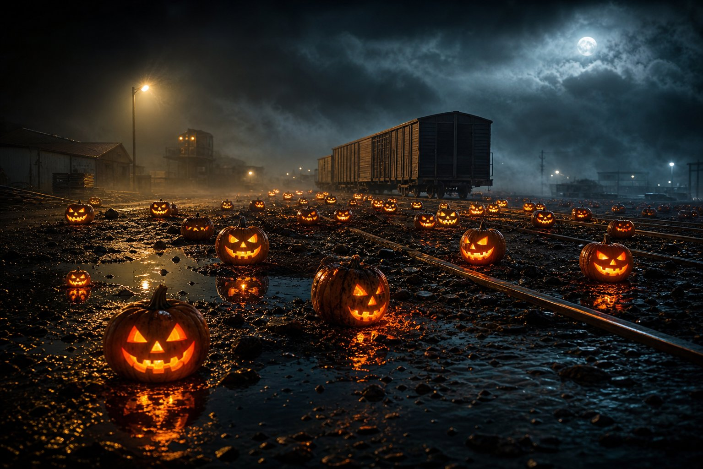
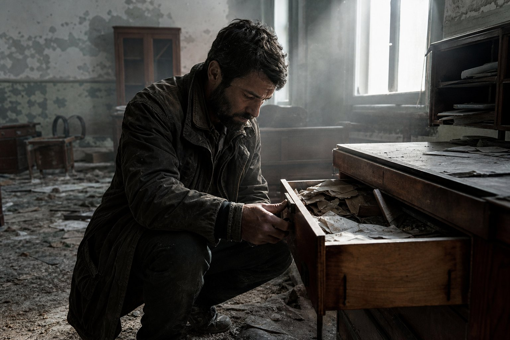

1. Le Troisième Warlord Tournament en bref
Le Warlord Tournament est ce qui ressemble le plus à une échelle compétitive dans Arena Breakout: Infinite. Chaque raid se déroule dans un petit salon à forte valeur, où personne ne peut cacher son équipement. La troisième édition s’est ouverte le 29 octobre 2026 et ferme le 7 décembre 2026, soit environ 40 jours pour grimper — presque deux semaines de plus que les événements d’Halloween lancés le même jour. Officiel
La formule de MoreFun tient en une ligne : « Avec les loadouts révélés et chaque geste à découvert, le Troisième Warlord Tournament est de retour ! » Les règles changent à chaque édition, ce qui rend obsolètes les guides des tours précédents. Officiel
| Édition | Dates | Saison | Ce qui a changé |
|---|---|---|---|
| Premier Warlord | 17 avr. – 14 mai 2026 | S5 — Distortion | Début : TV Station, salons de 5 équipes, classement par valeur de loot, loadouts visibles |
| Deuxième Warlord | 13 août – 13 sept. 2026 | S6 — White Nights | Étoiles du rang d’équipe et du rang d’éliminations personnelles, plafond de 3 par raid, limite d’écart de rang |
| Troisième Warlord | 29 oct. – 7 déc. 2026 | S7 — Utopia | Multiplicateur du fichier chiffré, intel par dog tags, marque Kill Leader |
Les trois éditions du Warlord Tournament
Le Warlord Tournament n'est pas un one-shot : c'est la compétition récurrente d'ABI, et chaque édition a changé le format. Officiel
| Édition | Période | Saison | Ce qui a changé |
|---|---|---|---|
| Premier | 17 avril – 14 mai 2026 | S5 : Distortion | Création : TV Station, lobbies de 5 escouades, classement sur la valeur du loot, tous les loadouts visibles |
| Deuxième | 13 août 2026 (Kamona Summer Festival) | S6 : White Nights | Retour des étoiles du Team Rank et du Personal Eliminations Rank, 3 par raid maximum, écart de rang d'escouade limité |
| Troisième | 29 octobre – 7 décembre 2026 | S7 : Utopia | Multiplicateur du fichier chiffré, intel par dog tags, marque Kill Leader |
Ce que l'historique vous apprend
Les deux premières éditions ont été courtes : quatre semaines pour la première, un simple retour ponctuel pour la deuxième. La troisième, en revanche, court pendant dix semaines et se termine le 7 décembre — c'est le dernier gros événement daté de la S7, et le point de bascule le plus probable de la saison.
2. Rangs et récompenses
Le tournoi a son propre classement, séparé du rang de saison. Un compte neuf démarre au rang Recruit IV. Chaque palier est subdivisé en sous-rangs numérotés, et on monte en gagnant des étoiles. Une fois le rang Warlord atteint, les étoiles continuent de compter : les deux dernières récompenses se trouvent à 15 et 30 étoiles. Officiel
- RookieTacti-Girl Charm Voucher ×5
- RangerSkin Supply Coupon S7 ×10
- CommanderVelocity Protocol Racing Suit
- WarlordWarlord III Badge
- Warlord 15★Warlord III Frame
- Warlord 30★Warlord III Background
Rookie ou Vanguard ?
Les notes de patch nomment le premier palier « Rookie », mais le suivi client de la deuxième édition affichait « Reach Vanguard Rating » pour la même marche. Traitez-les comme la même première étape au-dessus de Recruit, et fiez-vous à votre client. La structure de la S6 était identique : Demon Hunter Charm Voucher ×5, S6 Skin Supply Coupon ×10, Tournament Combat Suit, titre S2 Warlord, cadre et fond Warlord II. Officiel
La piste parallèle : Warlord Trial et Challenge Tokens
À côté du classement, il existe une seconde voie de récompenses. Les missions de tournoi rapportent des Warlord Challenge Tokens, que l’on dépense dans l’événement compagnon Warlord Trial. MoreFun y cite notamment un IND70 Tactical Helmet et le Limitless Gear Skin, obtenables gratuitement. Officiel
La piste la plus sûre du tournoi
Le casque IND70 est une récompense lighthouse depuis le premier tournoi, et les jetons de mission ne dépendent pas de finir premier. Une escouade qui n’atteindra jamais Warlord peut tout de même repartir avec du matériel, à condition qu’elle fasse les missions. Officiel
3. Le scoring : cinq règles à connaître
C’est la partie où la plupart des guides se trompent, parce que les règles ont changé entre les éditions. Officiel
- L’équipe est classée sur la valeur du loot. Les règles originales de la S5 disaient : « une fois dans le raid, des points sont attribués sur la valeur totale du loot de chaque équipe. Les points et classements des quatre meilleures équipes sont affichés en temps réel ». Le premier tournoi était un salon à 5 équipes sur TV Station.
- C’est le pic qui compte, pas le total final. Depuis la deuxième édition, « les points sont calculés sur la valeur de loot totale la plus élevée accumulée par l’équipe pendant le raid ». Le post du festival d’été ajoute que « la mort d’un coéquipier n’affectera pas le classement ». Concrètement, perdre un membre tardivement n’efface pas la valeur déjà atteinte.
- Le classement est réglé à la fin du raid, pas à l’extraction. C’est le piège classique : un joueur l’a expliqué sur Reddit — « tu reçois les points après la fin du match, pas après avoir extrait. Si le gars reste à l’intérieur et loot encore, il te passe devant et tu récupères presque rien ». Extraire tôt avec une petite avance ne verrouille pas la première place.
- Les étoiles viennent de deux sources, plafonnées à 3. Depuis la S6, les étoiles d’un raid sont « basées à la fois sur le rang d’équipe et le rang d’éliminations personnelles, le total des étoiles gagnées sur ces deux parties dans un même raid restant plafonné à 3 ». Un joueur très elim sur une équipe moyenne marque quand même bien. Personne ne saute plus de 3 étoiles par raid.
- Les coéquipiers doivent être de rangs proches. Depuis la S6, le matchmaking « ne peut pas démarrer si l’écart de rang entre les membres de l’escouade dépasse 2 grands rangs ». Un Warlord ne peut pas emmener un Recruit dans le même salon.
Le tableau des points par placement
Des décompositions communautaires de la deuxième édition rapportent une répartition d’environ +3 / +1 / 0 / −1 / −1 pour les places de 1 à 5, plus +2 / +1 / +1 pour les trois meilleurs par éliminations. MoreFun n’a jamais publié cette grille : traitez-la comme un guide, pas comme une règle. Ce qui est officiel, c’est le plafond de 3 étoiles et le fait qu’une dernière place peut coûter des points. Communauté

4. Le fichier chiffré : le multiplicateur qui vous trahit
Première des trois nouveautés de l’édition 2026, et la plus importante : « les équipes qui obtiennent et détiennent un fichier chiffré reçoivent un bonus de multiplicateur dynamique sur leurs points de base. Si un membre de l’escouade portant un fichier chiffré extrait avec succès, le bonus de multiplicateur reste actif. » Officiel
- Le taux. L’annonce de la S7 donne un chiffre : les fichiers chiffrés peuvent offrir un bonus de points de 1,5×, destiné à permettre aux équipes en retard de revenir. Mais les notes en direct parlent de multiplicateur « dynamique » : la valeur exacte peut varier. Ne comptez pas sur 1,5× pile.
- Le signalement. Les notes de la S7 sont explicites : « une diffusion globale aura lieu quand un fichier chiffré est acquis, et les autres escouades peuvent le consulter dans le panneau de détails du raid ». Le ramasser informe toute la carte.
- La conservation. Le bonus reste actif après l’extraction du porteur. Vous n’avez donc pas à le garder en vie jusqu’à la fin du raid.
- Le bon plan. Attraper le fichier et sortir son porteur rapidement. Tout le temps de survie du porteur est un temps pendant lequel toute la carte sait où vous êtes.
Le risque de données de la communauté
Un fil Reddit sur les fichiers chiffrés en Season 7 relève la frustration de leur visibilité : le bonus attire l’attention de toute la carte sur une escouade précise, ce qui transforme un avantage de points en cible. Le mécanisme est officiel — la diffusion globale — mais l’interprétation de sa rentabilité est un débat de communauté. Communauté
5. Les dog tags : l’intel que vous ne payez pas
Deuxième nouveauté : « quand vous inspectez ou ramassez un dog tag ennemi, tous les membres de votre escouade sont notifiés de la défaite de son propriétaire. Le panneau de détails du raid est également mis à jour avec cette information. » Officiel
Dans un salon à 5 équipes, savoir qu’une équipe rivale est réduite à un seul joueur suffit à décider d’une poussée. C’est une règle modeste, mais elle pèse surtout sur les escouades qui consultent le panneau de détails et parlent au micro.
6. Les conditions d’entrée
Attention ici : MoreFun n’a pas imprimé de conditions d’entrée pour le troisième tournoi dans les notes du 27 octobre. Ce qui est documenté vient des éditions précédentes. Officiel
| Élément | Valeur | Statut |
|---|---|---|
| Équipement minimum | 400 000 Koen de valeur de loadout | Édition 2026 (avr.) |
| Ticket par raid | 50 000 Koen | Édition 2026 (avr.) |
| Rang de saison minimum | Ace V | Rapporté, 2e édition |
| Valeur de stash totale | 40 000 000 Koen | Rapporté, 2e édition |
| Conditions exactes du 3e tournoi | À vérifier sur l’écran d’événement | Non publiées |
Les plafonds d’équipement par mode de la S7 (Normal : T4 et moins, Lockdown : T5 et moins) s’appliquent aux zones Tactiques Ops normales. Le Warlord Tournament est un mode événementiel séparé : vérifiez son propre écran d’entrée au lieu de supposer que ces plafonds s’appliquent. Officiel
N’achetez pas votre entrée
Cherchez cet événement et la plupart des premiers résultats sont des vendeurs de Koen et des services de carry. Ne le faites pas. MoreFun a supprimé l’achat de Koen à la version 1.0 et applique une politique de tolérance zéro qui punit les acheteurs comme les vendeurs : confiscation du Koen, baisse du score de Merit, bannissements. Le rapport de bannissement de la fortnighte du 13 au 26 juillet 2026 listait à lui seul 2 133 confiscations de Koen et 1 217 bannissements de dix ans. Officiel
7. Comment monter plus vite
Ces conseils découlent directement des règles officielles. Rien ici ne repose sur des chiffres cachés. Officiel
- Lisez l’écran des loadouts avant le raid. L’équipe de départ de chaque escouade est visible avant et pendant le raid (les noms des joueurs sont masqués). Choisissez vos cibles et vos itinéraires en fonction de l’équipe la moins blindée et de l’équipe la plus empilée.
- La valeur par emplacement bat le volume. Vous êtes classé sur la valeur du loot : remplissez vos sacs d’objets chers, pas de remplissage bon marché.
- Attrapez le fichier chiffré, puis sortez son porteur. Le bonus survit à l’extraction, et la diffusion globale fait du porteur une cible publique.
- Ne sortez pas tôt avec une petite avance. Le classement est réglé à la fin du raid sur la valeur de pic. Si un rival est encore dedans et juste derrière, rester pour ajouter de la valeur ou se battre peut rapporter plus que partir.
- Les kills comptent, mais jusqu’au plafond seulement. Un match à éliminations élevées sur une équipe médiocre rapporte des étoiles, mais aucun raid n’en donne plus de 3. Se battre au point de perdre la première place est rarement rentable.
- Exploitez les dog tags. Ramassez ou inspectez chaque plaque que vous pouvez atteindre sans risque : votre escouade voit la mise à jour et le panneau de détails montre quelles équipes sont affaiblies.
- Alignez les rangs de votre escouade. On ne peut pas démarrer avec plus de deux grands rangs d’écart : triez l’équipe avant la dernière semaine.
- Faites les missions même en visant rien. Les Challenge Tokens achètent le casque IND70 quel que soit votre rang.
8. Mysterious Pumpkin Night — le volet Halloween
La saison Halloween 2026 s’appelle Mysterious Pumpkin Night dans les notes, et le volet citrouille s’appelle Pumpkin Evolution II. Elle a tourné du 29 octobre à 05:00 UTC jusqu’au 26 novembre 2026, soit 28 jours — contre 21 jours pour l’édition 2025, qui s’était tenue du 24 octobre au 13 novembre 2025. Officiel
| Sous-événement | Dates | Objectif | Récompense clé |
|---|---|---|---|
| Pumpkin Evolution II | 29 oct. – 25 nov. | Entrer une Festive Pumpkin en raid et en extraire | Citrouilles évoluées, jusqu’à 880 000 Koen |
| Mysterious Night Adventure | 29 oct. – 25 nov. | Missions → Mysterious Points | Miraculous Festive Pumpkin, skins Night of Fear |
| Mysterious Night: Check In | 29 oct. – 25 nov. | Connexion sur 7 jours | Sleepless Night AK-12, Stormy Night SG550 |
| Pumpkin Messenger Sighted | 29 oct. – 25 nov. | Tuer les Pumpkin Messengers | Autumn Pumpkin Helmet, citrouilles de tout stade |
| Corrupted Treasures | 29 oct. – 25 nov. | Coffres / fabrication en Trophy Room | Fading Dawn, Corrupted Clock |

9. L’évolution des citrouilles : le mode d’emploi complet
Les règles 2026 sont volontairement courtes : « apportez une Festive Pumpkin dans un raid, explorez, et extrayez avec succès pour avoir une chance de la faire évoluer. La Festive Pumpkin évoluée aura une apparence différente et vaudra significativement plus ! » Les règles 2025 comblent les trous, et il faut le signaler : MoreFun n’a pas encore publié la page d’événement complète 2026. Officiel
| Règle | Valeur | Statut |
|---|---|---|
| Achat de citrouilles non mûres | 100 Koen l’unité, limite de 2 achats par jour | Officiel 2026 |
| Taille en inventaire | 2×2, ne peut pas entrer dans le Secure Case | Officiel 2026 |
| Calcul de l’EXP | 2 EXP pour 10 000 Koen de valeur de loot extraite | Officiel 2026 |
| Zones concernées | Lockdown et Forbidden | Règle 2025 |
| Étapes | Unripe → Ripe → Carved → Miraculous (niveau 4) | Noms 2025, échelle 2026 inchangée |
| Valeur finale | 880 000 Koen pour une citrouille pleinement évoluée | Officiel 2026 |
| Non évoluée | Convertie en Koen à l’extraction | Officiel 2026 |
| Miraculous non expirant | Stockable ou vendable 250 000 Koen aux contacts | Règle 2025 |
| Déblocage de l’écran | Niveau de personnage 13 | Règle 2025 |
La règle du 2026 qui change tout
En 2025, les citrouilles évoluaient dans les raids Lockdown et Forbidden. Les notes 2026 introduisent un calcul d’EXP explicite : 2 EXP pour 10 000 Koen de valeur de loot extraite. Et les citrouilles des ennemis morts comptent dans ce calcul : « vous pouvez aussi ramasser les citrouilles des opérateurs ennemis et extraire avec elles. Leur valeur compte dans votre valeur totale de loot extraite et contribue à votre calcul d’EXP ». Concrètement : un raid de farmage discipliné vaut mieux qu’un raid de combat risqué, parce que c’est la valeur extraite qui fait monter la citrouille, pas le nombre de kills. Officiel
Est-ce que l’évolution vaut le coup ?
Oui si vous extrayez régulièrement. Non si vous êtes en série de morts. Une citrouille perdue est une citrouille perdue, et une citrouille restée à un stade intermédiaire n’a plus aucune valeur à la fin de l’événement. Officiel
- Jouez la carte où vous extraisez le plus souvent. Pour beaucoup de joueurs, c’est Farm en Lockdown.
- Ne mettez pas toutes vos citrouilles dans un seul raid. Répartissez-les sur plusieurs sorties : une seule mort ne doit pas réinitialiser toute votre série.
- Commencez tôt. Chaque évolution demande une extraction réussie : démarrer le 29 octobre offrait le plus grand nombre de tentatives avant la date limite.
- Ramassez les citrouilles ennemies. Elles comptent dans l’EXP et peuvent vous faire sauter une étape.
- Terminez vos évolutions avant le 25/26 novembre. En 2025, seules les citrouilles Miraculous étaient conservées ; les stades intermédiaires « expiraient et étaient récupérés » à la fin de l’événement. La règle 2026 n’est pas confirmée : traitez-la comme active par prudence.
10. Les Pumpkin Messengers
Les Pumpkin Messengers ne faisaient pas partie de l’annonce 2025. Selon les notes, ils « apparaîtront sur toutes les cartes pour une durée limitée » pendant l’événement. Tuez-en un et vous obtenez un Autumn Pumpkin Helmet. Fouillez leur sac à dos pour « avoir une chance de trouver une Festive Pumpkin de n’importe quel stade ou d’autres objets de valeur ». Officiel
Ce dernier point compte : un Messenger peut livrer une citrouille déjà évoluée, ce qui permet de sauter une partie de la série d’extractions — à condition de sortir avec. MoreFun n’a publié ni les points d’apparition, ni les horaires, ni les points de vie : traitez-les comme une cible temporaire à forte valeur. Officiel
11. Corrupted Treasures
Cet événement ajoute deux collectibles à durée limitée :
- Fading Dawn — « Cherchez dans les coffres de n’importe quelle carte pendant l’événement pour avoir une chance de le trouver. » Rôle de caisse : c’est un jeton sûr, donc les itinéraires riches en coffres sont le moyen efficace de l’obtenir.
- Corrupted Clock — « Fabriquez-le dans la Trophy Room en utilisant des objets divers corrompus. Ces objets se trouvent sur toutes les cartes. » C’est un projet de fabrication : ramassez les objets divers corrompus pendant l’événement et rapportez-les à la Trophy Room.
MoreFun n’a pas indiqué si l’un ou l’autre survit au 25 novembre. Ne considérez pas un objet corrompu comme sûr à conserver au-delà de la date de fin tant que la page d’événement officielle ne l’a pas confirmé. Officiel
12. Dim Dou Duk Gourmet Market
Arrivé avec la mise à jour en direct du 10 novembre 2026 (en vigueur à 03:00 UTC+0), l’événement Dim Dou Duk Collaboration: Gourmet Market court du 9 novembre au 6 décembre 2026. Dim Dou Duk est une véritable enseigne cantonaise de dim sum : l’événement ajoute deux objets au loot pool de toutes les cartes. Officiel
La citation des notes est précise : « pendant l’événement, vous pouvez trouver les Dim Dou Duk Shrimp Dumplings, l’aliment de la collaboration, et les Dim Sum Vouchers, l’objet d’événement, dans des conteneurs tels que sacs de sport et valises, sur toutes les cartes. Collectez assez de Dim Sum Vouchers pour échanger des récompenses sur l’écran d’événement. » Officiel
| Élément | Valeur |
|---|---|
| Nom de l’événement | Dim Dou Duk Collaboration: Gourmet Market |
| Dates | 9 nov. – 6 déc. 2026 (UTC+0), 28 jours — soit environ 27 jours jouables en pratique |
| Objet d’événement | Dim Sum Voucher |
| Aliment de collaboration | Dim Dou Duk Shrimp Dumplings |
| Où ils droppent | Conteneurs « tels que sacs de sport et valises », toutes les cartes |
| Où on les dépense | Écran d’événement, hors raid |
| Taux de drop | Non publié |
| Prix des récompenses | Non publiés dans les notes |
Ce qu’on achète avec les vouchers
- Dim Dou Duk Gear Skin — skin d’équipement, la récompense principale.
- Dim Dou Duk Smoke Grenade — skin de grenade fumée.
- Dim Dou Duk Badge — badge de profil.
- Char Siu Spray — spray de la collaboration (le char siu est du porc grillé cantonais).
- Tacti-Girl Charm Vouchers — également distribués par Halloween et le Warlord Tournament.
- Season 7 Skin Supply Coupons — coupons de tirages de la saison 7.
Deux points d’attention : toutes ces récompenses sont esthétiques ou de la monnaie de tirage — aucune raison de combat ne justifie une course. Et les coupons de tirages expirent avec la saison : les notes de la S6 indiquaient que les coupons S5 ne pouvaient pas être utilisés dans la nouvelle saison. Depensez ceux de la S7 avant la fin de la saison. Officiel
Le piège du confit
Le Dim Sum Voucher est la monnaie. Les Shrimp Dumplings sont un objet de raid distinct, et c’est aussi l’un des quatre objets de l’enquête Kamona. Manger un ravioli en raid le retire de la remise. Portez-les jusqu’à l’enquête, pas jusqu’à votre barre de faim. Officiel
13. Kamona Investigation — Tea Break Delights
Kamona Investigation est l’événement de remise récurrent d’Arena Breakout: Infinite. Chaque phase nomme une liste d’objets à collecting puis à rendre. La phase en cours est Tea Break Delights, et elle court du 9 au 22 novembre 2026 — quatorze jours, soit la moitié de la durée du Gourmet Market. Officiel
| Objet à rendre | Nature |
|---|---|
| Lait | Nourriture de raid standard |
| Miel | Nourriture de raid standard |
| Pellicule | Loot de valeur plus élevée, présent aussi dans les trocs de contacts |
| Dim Dou Duk Shrimp Dumplings | Le nouvel aliment de la collaboration, dans les mêmes conteneurs que les vouchers |
Les notes ne donnent pas le nombre d’exemplaires à rendre pour chaque objet : l’écran d’événement l’affiche. Officiel
Les récompenses de l’enquête
- Double-N Lute — Rain of Gold Gift Box
- Emerald Jade Flute — Shining Gold Gift Box
- Stroke of Luck Gift Box I
- Lucky Break Gift Box I
- Tacti-Girl Charm Vouchers
- Season 7 Skin Supply Coupons

Investigate Drawers, la seconde couche
Elle a deux niveaux :
- Des missions de défi qui paient en Koen, en vouchers de charme Tacti-Girl et en coupons de skins S7.
- Des tiroirs sur toutes les cartes qui offrent « une chance supplémentaire d’obtenir des objets spéciaux exclusifs à cette phase de la Kamona Investigation ».
Autrement dit : les sacs de sport et les valises sont confirmés pour les vouchers et les raviolis, les tiroirs sont confirmés pour les objets exclusifs de l’enquête. Un itinéraire qui ouvre les trois couvre les deux événements d’un coup. Officiel
Ne vendez pas votre pellicule
La tentation de vendre la pellicule sur le marché est réelle, mais l’enquête ferme le 22 novembre. Gardez d’abord de quoi remplir la remise, vendez le reste ensuite. C’est le seul élément des quatre qui ait une valeur marchande significative. Officiel
14. Empiler les événements : la feuille de route
Tous ces événements se chevauchent, et leurs charges se cumulent sur les mêmes sorties. Le tableau ci-dessous est la synthèse opérationnelle de toute la page. Officiel
| Événement | Fin (UTC+0) | Restant au 17 nov. | Compatible avec le farming Dim Sum ? |
|---|---|---|---|
| Trash to Treasure (Smelter) | 15 nov. | Clos | Oui — même formule PDA + câble + portable |
| Kamona Investigation — Tea Break Delights | 22 nov. | 5 jours | Oui — mêmes conteneurs + tiroirs |
| Halloween — Mysterious Pumpkin Night | 25 nov. | 8 jours | Oui — les Pumpkin Messengers apparaissent partout |
| Dim Dou Duk — Gourmet Market | 6 déc. | 19 jours | Référence |
| Troisième Warlord Tournament | 7 déc. | 20 jours | Mode séparé |
- Allez où sont les conteneurs civils. Sacs de sport, valises et tiroirs se trouvent dans les maisons, les bureaux, les chambres et les terminaux — pas dans les caisses militaires. À Farm, visez les bâtiments résidentiels plutôt que les champs ; à Airport, les intérieurs de terminal et de bureaux ; à Valley, Northridge, Armory et TV Station, les blocs de bureaux et d’habitations plutôt que les espaces ouverts.
- Emportez un kit bon marché. Toutes les récompenses sont cosmétiques : risquer votre meilleur équipement pour un voucher n’a aucun sens. Un kit bon marché en zone Normal permet d’ouvrir beaucoup de conteneurs sans protection.
- Gardez de la place dans le sac pour la nourriture. Les raviolis, le lait et le miel comptent pour l’enquête. Remontez-les hors raid, ne les mangez pas.
- Empilez les autres événements sur les mêmes sorties. Le tableau ci-dessus montre exactement ce qui se cumule.
- Priorisez par date limite. Trash to Treasure ferme en premier, puis l’enquête, puis Halloween. Les vouchers ont la fenêtre la plus longue : ne laissez pas le farming de vouchers ne doit pas écraser les remises qui ferment plus tôt.
Est-ce que ça vaut le coup de farm pour des Koen ?
Seulement avec un kit bon marché. Les missions de tiroirs de l’enquête paient en Koen, mais le Gourmet Market lui-même ne paie qu’en cosmétiques et coupons. Les Koen ne sont pas achetables contre de l’argent réel et MoreFun bannit les acheteurs comme les vendeurs : les récompenses viennent du jeu, il n’y a aucun raccourci sûr. Officiel
15. Sources
Officiel
- Live Update du 27 octobre 2026 (UTC+0) — annonce de la saison Halloween, du Troisième Warlord Tournament, des règles du fichier chiffré, des dog tags et du marqueur Kill Leader. x.com/ArenaBreakoutPC (nouvel onglet)
- Live Update du 10 novembre 2026 (UTC+0) — collaboration Dim Dou Duk, lancement de Kamona Investigation, 12 correctifs. patchbot.io (nouvel onglet)
- Notes de la Saison 7 — Utopia — 15 septembre 2026 : fichier chiffré à 1,5×, diffusion globale, Red Drops. store.steampowered.com (nouvel onglet)
- Annonce Halloween 2025 — officielle Steam : première édition de Mysterious Pumpkin Night, règles d’évolution, achat à 100 Koen, expiration des stades intermédiaires. store.steampowered.com (nouvel onglet)
- Live Update du 4 novembre 2025 — confirmation qu’une citrouille Miraculous n’expire pas et se vend 250 000 Koen aux contacts.
Communautaire
- timesaver.gg — Warlord Tournament (Season 7) — historique des trois éditions, tableau des récompenses, règles de scoring, changement du multiplicateur et des dog tags. timesaver.gg (nouvel onglet)
- timesaver.gg — Halloween Event 2026 — détail des six sous-événements, règles d’évolution, formule du Smelter. timesaver.gg (nouvel onglet)
- timesaver.gg — Dim Sum Vouchers — objets de l’enquête, lieu de drop des vouchers,Récompenses du Gourmet Market. timesaver.gg (nouvel onglet)
- r/ArenaBreakoutInfinite — fil sur le règlement du classement à la fin du raid, files sur la visibilité du fichier chiffré, signalements « 5 raids havent found a single one » sur les vouchers. reddit.com (nouvel onglet)
Non confirmé
- Le tableau de points par placement (+3 / +1 / 0 / −1 / −1) est une reconstruction communautaire de la deuxième édition ; MoreFun ne l’a jamais publié.
- Les conditions d’entrée Ace V et 40 000 000 Koen de stash sont rapportées par des guides communautaires pour la deuxième édition, sans post Steam officiel. Vérifiez l’écran d’événement.
- Les points d’apparition, la vie et les horaires des Pumpkin Messengers ne sont pas publiés.
- La règle d’expiration 2026 des citrouilles non évoluées et la survie de la pile de Dim Sum Vouchers à la fin de l’événement ne sont pas confirmées : les coupons de tirages expirent, mais rien n’est dit des currencies d’événement au-delà de la fermeture de l’écran.